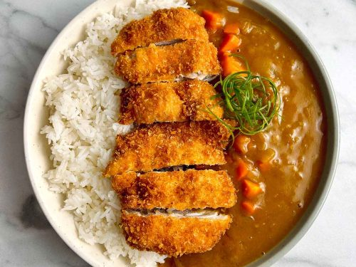

Home
Chicken Katsu

Chicken Katsu is a Japanese dish that consists of breaded and deep-fried chicken cutlets. It is often served with a side of rice and a tangy sauce, making it a delicious and satisfying meal.
Ingredients
- 2 boneless, skinless chicken breasts
- 1 cup panko breadcrumbs
- 1/2 cup all-purpose flour
- 2 large eggs
- Salt and pepper to taste
- Vegetable oil for frying
- Tonakatsu sauce (for serving)
Instructions
- Preheat the oil in a deep fryer or large skillet to 350°F (175°C).
- Season the chicken breasts with salt and pepper.
- Set up a breading station with three shallow dishes: one with flour, one with beaten eggs, and one with panko breadcrumbs.
- Dredge each chicken breast in flour, then dip in the egg, and finally coat with panko breadcrumbs.
- Carefully place the breaded chicken into the hot oil and fry until golden brown and cooked through, about 4-5 minutes per side.
- Remove from oil and drain on paper towels.
- Slice the chicken katsu and serve with tonkatsu sauce.